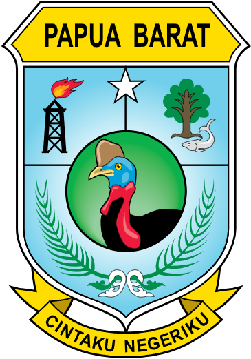
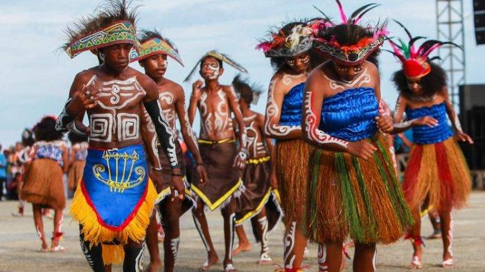
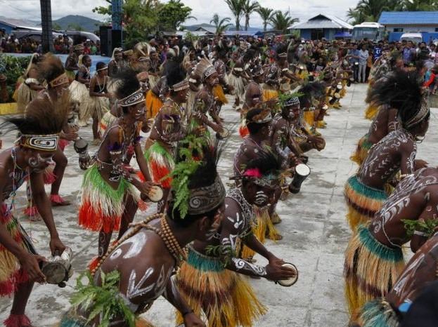
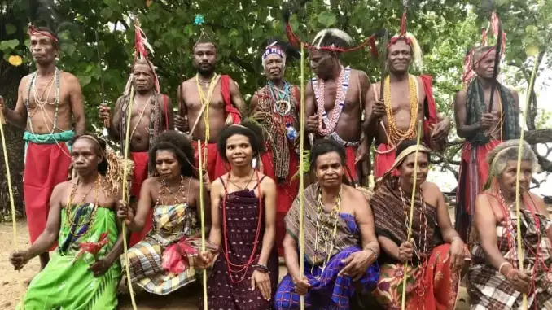

Sumatra
Nusa Tenggara
Maluku
Papua
Papua Barat
Papua Barat adalah sebuah provinsi Indonesia yang terletak di ujung barat Pulau Papua. Wilayah Papua Barat mencakup Semenanjung Bomberai dan Wandamen. Ibukota provinsi ini terletak di Manokwari. Provinsi ini dimekarkan dari Provinsi Papua melalui Undang-Undang Nomor 45 Tahun 1999. Pada awalnya pembentukan provinsi ini mendapatkan penolakan dari masyarakat sehingga implementasi dari pemekaran ini baru dilaksanakan melalui Instruksi Presiden Nomor 1 Tahun 2003. Walaupun pada 11 November 2004 Mahkamah Konstitusi menyatakan bahwa dasar hukum pembentukan Provinsi Irian Jaya Barat sudah tidak memiliki kekuatan hukum yang mengikat, namun keberadaan provinsi ini dinyatakan tetap sah.
Informasi Umum
| Nama Provinsi | Kode Wilayah | Kode Internasional | Singkatan Umum | Ibu Kota | Hari Jadi | Lambang |
|---|---|---|---|---|---|---|
| Papua Barat | 92 | ID-PB | Pabar | Manokwari | 12 Oktober 1999 |  |
Budaya

Rumah Kariwari adalah salah satu rumah adat khas Papua, lebih tepatnya adalah rumah adat dari Suku Tobati-Enggros yang bermukim di sekitar Teluk Yuotefa dan Danau Sentani, Jayapura. Berbeda dengan bentuk rumah adat Papua lainnya - seperti honai yang berbentuk bulat - rumah Kariwari berbentuk limas segi delapan. Rumah Kariwari biasanya terbuat dari, bambu, kayu besi dan daun sagu hutan. Rumah Kariwari terdiri dari dua lantai dan tiga kamar atau tiga ruangan, dengan fungsi yang masing-masing berbeda. Arsitektur rumah Kariwari juga dianggap sangat khas dan menjadi salah satu simbol penting bagi budaya Papua sehingga menjadi ikonik di anjungan Papua yang terdapat di Taman Mini Indonesia Indah.
Pakaian adat Holim merupakan pakaian adat Papua Barat tepatnya berasal dari suku Dani Papua, dimana pakaian adat ini dikhususkan untuk kaum laki-laki. Pakaian adat holim ini juga mempunyai nama lain yakni pakaian koteka atau pakaian penutup kemaluan. Pakaian adat holim biasanya bisa digunakan dalam kehidupan sehari-hari. Dimana koteka biasanya akan digunakan dengan diikat ke pinggang dengan memakai seutas tali hingga ujung koteka tersebut bisa mengacung ke atas.
Tari tradisional masyarakat Papua dapat dikatakan merupakan cerminan jati diri yang harus dipahami oleh semua orang, bukan hanya warga yang tinggal di wilayah Papua saja, Lantas, apa saja tari-tarian tradisional dari Papua Barat? Berikut akan disajikan penjelasan mengenai beberapa tarian tradisional Papua Barat

Tari Soanggi adalah tarian adat yang berasal dari daerah pantai Teluk Cendrawasih, Kabupaten Waropen, Provinsi Papua Barat. Eksistensi awal tari Soanggi tidak begitu jelas, tetapi tarian ini merupakan salah satu bentuk ekspresi masyarakat Papua Barat yang masih kental dengan nuansa magis. Tarian tersebut berawal dari kisah seorang suami yang ditinggal mati istrinya akibat diserang oleh makhluk bernama anggi-anggi atau soanggi (jadi-jadian),

Tari Aluyen adalah tarian adat yang berasal dari daerah Distrik Aimas, Kabupaten Sorong, Provinsi Papua Barat. Tari Aluyen merupakan tarian tradisional yang biasanya dilakukan sebagai bagian dari upacara adat, yaitu pembangunan rumah baru dan pembukaan kebun baru. Tarian tersebut dapat dilakukan pada siang atau malam hari. Namun, jika diadakan di dalam rumah adat, pertunjukannya bisa berlangsung selama 1–2 bulan.
Rumpun bahasa Papua Barat adalah sebagian dari kelompok bahasa Papua. Satu rumpun dugaan yang terdiri dari 23 bahasa di Semenanjung Doberai di bagian barat pulau Papua dan di bagian utara pulau Halmahera. Keseluruhan penuturnya berjumlah sekitar 220 000 orang. Bahasa Papua Barat yang paling terkenal adalah bahasa Ternate dengan sekitar 50 000 penutur. Bahasa ini merupakan lingua franca di kawasannya. Bahasa Papua Barat terdiri atas 2 kelompok utama, yaitu Halmahera Utara dan Yapen

Papua Barat, yaitu suku Moi di Sorong dan suku Roon di Kabupaten Teluk Wondama melaksanakan perkawinan adat dengan tradisi kuling rokok atau yang dikenal merokok. Tradisi pernikahan adat dari suku Moi dan suku Roon dalam pernikahan adat menggunakan tradisi kuling rokok atau merokok. Dalam adat ini nantinya rokok akan dibakar dan berikan kepada mempelai perempuan untuk dihisap, setelah itu akan diberikan kepada mempelai laki-laki, hanya untuk mengetuk rokok tersebut. Setelahnya sebatang rokok ini akan diberikan kepada saudara perempuan dari mempelai laki-laki untuk dihisab secara bergiliran. Tradisi ini mengartikan persekutuan.
Yang paling terkenal dan kerap dipakai dari beberapa ragam senjata tradisional Papua Barat adalah berupa busur dan panah. Senjata ini biasanya dipakai untuk berburu babi dan hewan liar lainnya. Selain itu, seringnya konflik antar kelompok yang terjadi membuat senjata tersebut juga sering dipakai untuk alat berperang. Busur dan Panah senjata adat papua barat. Busur dibuat dari kayu rumi dengan seutas tali dari rotan. Sedangkan anak panahnya dibuat dari kayu dengan mata panah dari tulang hewan yang diruncingkan. Mata panah tersebut umumnya diberi cairan racun dari getah tumbuhan hutan untuk menambah efek mematikan.
Yi adalah alat musik tradisional Papua Barat berupa alat musik tiup yang mempunyai bentuk seperti suling. Alat musik yi ini dibuat dengan menggunakan bahan kayu dan juga bambu yang mempunyai warna coklat gelap. Alat musik Yi seringnya digunakan sebagai pengiring tarian adat, hal ini dikarenakan alat musik yi dapat menghasilkan suara yang cukup unik. Alat musik yi adalah alat musik tradisional berasal dari Papua Barat. Pada awalnya yi merupakan alat yang digunakan untuk mengumpulkan para penduduk. Biasanya alat ini alat digunakan oleh para ketua adat pada saat akan diadakan upacara adat atau pada saat akan menyampaikan pengumuman kepada masyarakat sekitar.
Apuse adalah sebuah lagu yang berasal dari daerah Kampung Kabouw, Wondiboy, Teluk Wondama, Provinsi Papua Barat. Lagu "Apuse" diciptakan oleh Tete Mandosir Sarumi dalam bahasa Biak dan dipopulerkan oleh Corry Rumiono, serta dinyanyikan dalam lomba Bintang Radio. Lagu Apuse kemudian dikenal di tingkat nasional. Lagu ini memiliki irama yang indah dan sederhana sehingga lagu ini sering dipelajari dalam pelajaran kesenian di tingkat Sekolah Dasar. Apuse menceritakan tentang seorang cucu yang berpamitan kepada kakek dan neneknya. Cucu tersebut berpamitan karena hendak pergi merantau yaitu ke Teluk Doreri di Manokwari. Memang Teluk Doreri sempat menjadi pelabuhan penting dengan bukti banyaknya kapal yang karam di dalamnya.
Kuliner

Ikan Bakar Pedas Manokwari. Ikan bakar pedas manokwari menjadi salah satu makanan khas Papua Barat Daya yang kini kerap jadi menu pilihan. Ikan bakar yang menggunakan ikan cakalang ini memiliki rasa yang gurih, dengan bumbu bakar yang extra pedas.
Destinasi Wisata

Kabupaten Raja Ampat adalah salah satu kabupaten di provinsi Papua Barat Daya, Indonesia. Ibukota kabupaten ini terletak di Waisai. Kabupaten ini memiliki 610 pulau, termasuk kepulauan Raja Ampat. Empat di antaranya, yakni Pulau Misool, Salawati, Batanta dan Waigeo, merupakan pulau-pulau besar. Dari seluruh pulau hanya 35 pulau yang berpenghuni sedangkan pulau lainnya tidak berpenghuni dan sebagian besar belum memiliki nama. Kabupaten ini memiliki total luas 67.379,60 km² dengan rincian luas daratan 7.559,60 km² dan luas lautan 59.820,00 km².